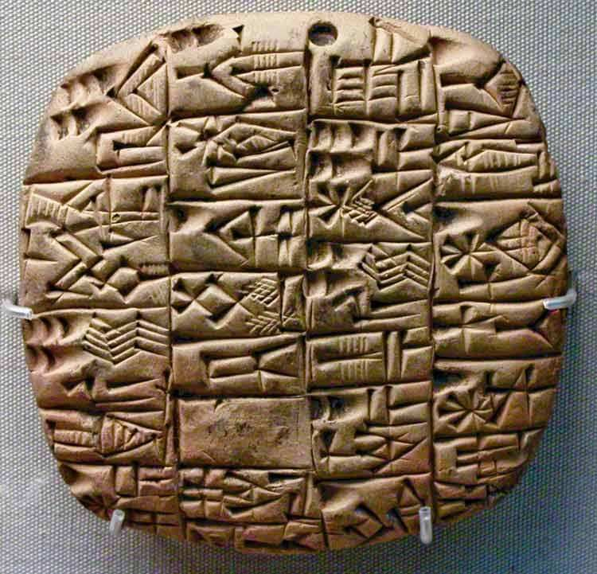

Bem vindo ao Science&Literature!
A utilização da Literatura no ensino, permite que haja boas estratégias para facilitar a aprendizagem e estimular o indivíduo a sempre estar em busca do conhecimento.
Esta é uma página que traz curiosidades acerca da Literatura, fofocas literárias (eita boy rs), e o seu uso para com a ciência.
Bora?!
Desde os primórdios da humanidade, para que os seres humanos sobrevivessem, precisaram aprender uma maneira de se comunicarem. Através de ruídos e sons, conseguiram se adaptar ao ambiente e à fauna local. Com o passar do tempo, aprenderam a se comunicarem com símbolos escritos, através de pedras pontiagudas desenhando nas cavernas. Os estudiosos da Arqueologia acreditam que esta foi a primeira forma de comunicação escrita, a escrita cuneiforme.

A partir daí, fomos evoluindo e encontramos a escrita com o papiro. Desde então, utilizamos a escrita para tudo.
E assim, chegamos a diversos avanços como a ciência e a sua ascensão com o capitalismo.
Este é o começo da página, onde você verá como foi o processo do "nascimento" da Literatura e sua importância para com a ciência.
O que seria de nós, hoje, sem a escrita? O que a Literatura ajudou desde a primeira escrita no primeiro papiro? Aos poucos, você acompanhará aqui.
É um amante da Literatura também?
Inscreva-se aqui no blog e receba sempre as atualizações sobre Literatura e livros no geral! ;)